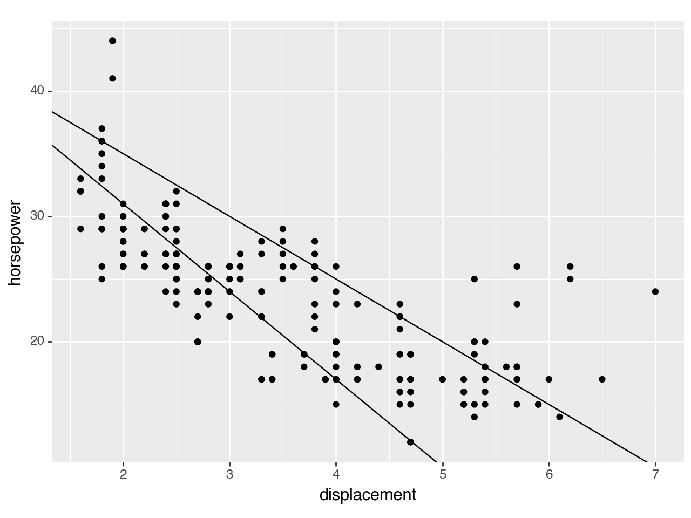

import pandas as pd
import numpy as np
from plotnine import (
ggplot,
aes,
geom_point,
labs,
geom_abline,
facet_grid
)
from plotnine.data import mpggeom_abline
geoms.geom_abline(self, mapping=None, data=None, **kwargs)
Lines specified by slope and intercept
Usage
geom_abline(mapping=None, data=None, stat='identity', position='identity',
na_rm=False, inherit_aes=False, show_legend=None, raster=False,
**kwargs)Only the data and mapping can be positional, the rest must be keyword arguments. **kwargs can be aesthetics (or parameters) used by the stat.
Parameters
| Name | Type | Description | Default | ||||||||||||||||
|---|---|---|---|---|---|---|---|---|---|---|---|---|---|---|---|---|---|---|---|
mapping
|
aes |
Aesthetic mappings created with aes. If specified and :py:inherit.aes=True, it is combined with the default mapping for the plot. You must supply mapping if there is no plot mapping.
|
None
|
data : dataframe, optional The data to be displayed in this layer. If None, the data from from the :py:ggplot() call is used. If specified, it overrides the data from the :py:ggplot() call. stat : str or stat, optional (default: ~plotnine.stats.stat_identity) The statistical transformation to use on the data for this layer. If it is a string, it must be the registered and known to Plotnine. position : str or position, optional (default: ~plotnine.positions.position_identity) Position adjustment. If it is a string, it must be registered and known to Plotnine. na_rm : bool, optional (default: False) If False, removes missing values with a warning. If True silently removes missing values. inherit_aes : bool, optional (default: False) If False, overrides the default aesthetics. show_legend : bool or dict, optional (default: None) Whether this layer should be included in the legends. None the default, includes any aesthetics that are mapped. If a bool, False never includes and True always includes. A dict can be used to exclude specific aesthetis of the layer from showing in the legend. e.g :py:show_legend={'color': False}, any other aesthetic are included by default. raster : bool, optional (default: False) If True, draw onto this layer a raster (bitmap) object even ifthe final image is in vector format.
Examples
AB line
geom_abline() draws a line when the yintercept and gradient is supplied, and is useful as a guide.
# inspect the data
mpg.head()| manufacturer | model | displ | year | cyl | trans | drv | cty | hwy | fl | class | |
|---|---|---|---|---|---|---|---|---|---|---|---|
| 0 | audi | a4 | 1.8 | 1999 | 4 | auto(l5) | f | 18 | 29 | p | compact |
| 1 | audi | a4 | 1.8 | 1999 | 4 | manual(m5) | f | 21 | 29 | p | compact |
| 2 | audi | a4 | 2.0 | 2008 | 4 | manual(m6) | f | 20 | 31 | p | compact |
| 3 | audi | a4 | 2.0 | 2008 | 4 | auto(av) | f | 21 | 30 | p | compact |
| 4 | audi | a4 | 2.8 | 1999 | 6 | auto(l5) | f | 16 | 26 | p | compact |
It’s useful to use geom_abline() with some data, so we start with a basic scatter plot:
(
ggplot(mpg, aes(x='displ', y='hwy'))
+ geom_point()
+ labs(x='displacement', y='horsepower')
)
<Figure Size: (640 x 480)>Now layer a line over the scatter plot using geom_abline(). geom_abline() requires inputs for the slope (default slope is 1) and y-intercept (default value is [0,0]).
(
ggplot(mpg, aes(x='displ', y='hwy'))
+ geom_point()
+ geom_abline(intercept=45, # set the y-intercept value
slope=-5 # set the slope value
)
+ labs(x='displacement', y='horsepower')
)
<Figure Size: (640 x 480)>You can plot two lines on one plot:
(
ggplot(mpg, aes(x='displ', y='hwy'))
+ geom_point()
+ geom_abline(intercept=[45,45], # add many lines to a plot using a list for the y-intercepts...
slope=[-5,-7] # ... and for the slopes
)
+ labs(x='displacement', y='horsepower')
)
<Figure Size: (640 x 480)>You can change the look of the line:
(
ggplot(mpg, aes(x='displ', y='hwy'))
+ geom_point()
+ geom_abline(intercept=45,
slope=-5,
color='blue', # set line colour
size=2, # set line thickness
linetype="dashed" # set line type
)
+ labs(x='displacement', y='horsepower')
)
<Figure Size: (640 x 480)>geom_abline() can be used with a facet plot:
(
ggplot(mpg, aes(x='displ', y='hwy'))
+ geom_point()
+ geom_abline(intercept=45,slope=-5) # add a line ...
+ facet_grid('drv ~ .') # ... to a facet plot.
+ labs(x='displacement', y='horsepower')
)
<Figure Size: (640 x 480)>